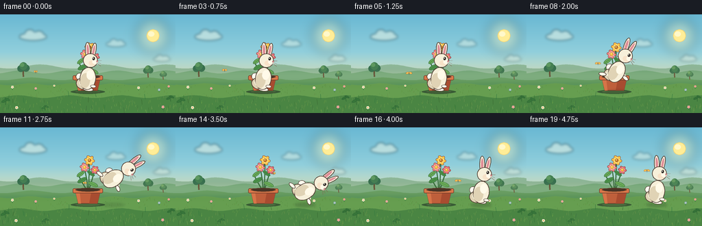
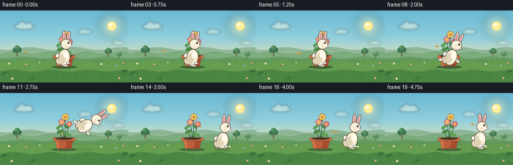
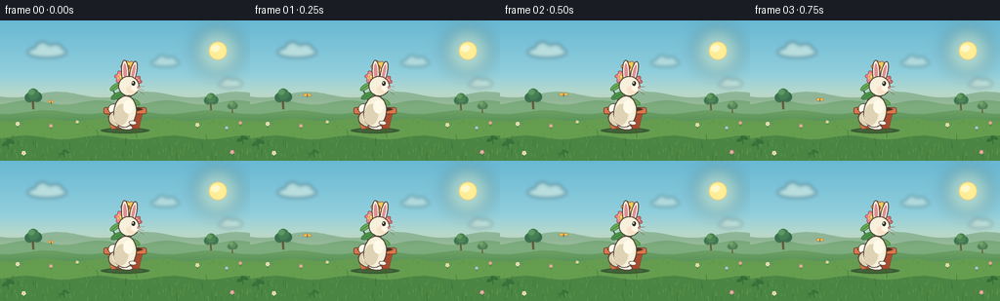

CODING AGENTS AS PIXEL WORLD MODELS
traex/DeepSeek-V4.1-Flash · dynamic_spatial_relationship_0021
点击播放 · 原生 RGB 像素
逐轮保存的候选
回放视频、检查图与代码变化。
每份候选均可单独播放。实际图片检查记录在下方工具轨迹中。
候选 01播放与检查图
点击播放 · 原生 RGB 像素

展开代码变化
--- 上一保存版本
+++ 本次保存版本
@@ -0,0 +1,441 @@
+from pathlib import Path
+import math
+import random
+
+import numpy as np
+from PIL import Image, ImageDraw, ImageFilter
+
+import artifact_io
+
+
+ROOT = Path(__file__).resolve().parent
+W, H, FPS, N = 256, 144, 4, 20
+S = 4
+GROUND = 112.0
+
+
+def px(value):
+ return int(round(value * S))
+
+
+def rgb(color):
+ return tuple(int(channel) for channel in color)
+
+
+def vertical_gradient(stops):
+ height, width = H * S, W * S
+ positions = np.linspace(0.0, 1.0, height)
+ arr = np.empty((height, width, 3), dtype=np.float32)
+ for channel in range(3):
+ values = [color[channel] for _, color in stops]
+ arr[:, :, channel] = np.interp(positions, [pos for pos, _ in stops], values)[:, None]
+ return Image.fromarray(np.clip(arr, 0, 255).astype(np.uint8), "RGB")
+
+
+def rotated_point(x, y, cx, cy, angle):
+ radians = math.radians(angle)
+ cos_a, sin_a = math.cos(radians), math.sin(radians)
+ dx, dy = x - cx, y - cy
+ return cx + dx * cos_a - dy * sin_a, cy + dx * sin_a + dy * cos_a
+
+
+def ellipse_points(cx, cy, rx, ry, angle=0.0, count=64):
+ points = []
+ for index in range(count):
+ theta = 2.0 * math.pi * index / count
+ x = cx + rx * math.cos(theta)
+ y = cy + ry * math.sin(theta)
+ points.append(rotated_point(x, y, cx, cy, angle))
+ return [(px(x), px(y)) for x, y in points]
+
+
+def ellipse(draw, cx, cy, rx, ry, fill, outline=None, width=1.0, angle=0.0):
+ points = ellipse_points(cx, cy, rx, ry, angle)
+ draw.polygon(points, fill=rgb(fill))
+ if outline is not None:
+ draw.line(points + [points[0]], fill=rgb(outline), width=max(1, px(width)), joint="curve")
+
+
+def polygon(draw, points, fill, outline=None, width=1.0):
+ scaled = [(px(x), px(y)) for x, y in points]
+ draw.polygon(scaled, fill=rgb(fill))
+ if outline is not None:
+ draw.line(scaled + [scaled[0]], fill=rgb(outline), width=max(1, px(width)), joint="curve")
+
+
+def line(draw, points, fill, width=1.0, joint="curve"):
+ draw.line([(px(x), px(y)) for x, y in points], fill=rgb(fill), width=max(1, px(width)), joint=joint)
+
+
+def soft_layer(base, draw_fn, blur=0.0):
+ layer = Image.new("RGBA", base.size, (0, 0, 0, 0))
+ draw = ImageDraw.Draw(layer)
+ draw_fn(draw)
+ if blur:
+ layer = layer.filter(ImageFilter.GaussianBlur(px(blur)))
+ base.alpha_composite(layer) if base.mode == "RGBA" else base.paste(layer, (0, 0), layer)
+
+
+def wavy_band(draw, top, amplitude, wavelength, phase, color, bottom=H + 2):
+ points = []
+ for step in range(65):
+ x = W * step / 64
+ y = top + amplitude * math.sin(2 * math.pi * x / wavelength + phase)
+ points.append((x, y))
+ points += [(W + 2, bottom), (-2, bottom)]
+ polygon(draw, points, color)
+ return points
+
+
+def draw_tree(draw, x, ground_y, size, trunk, leaf_dark, leaf_mid, leaf_light):
+ line(draw, [(x, ground_y), (x - 0.5, ground_y - size * 0.65)], trunk, width=size * 0.13)
+ ellipse(draw, x - size * 0.22, ground_y - size * 0.70, size * 0.30, size * 0.29, leaf_dark)
+ ellipse(draw, x + size * 0.22, ground_y - size * 0.74, size * 0.31, size * 0.31, leaf_dark)
+ ellipse(draw, x, ground_y - size * 0.92, size * 0.34, size * 0.33, leaf_mid)
+ ellipse(draw, x - size * 0.11, ground_y - size * 1.02, size * 0.18, size * 0.17, leaf_light)
+
+
+def draw_small_flower(draw, x, y, size, petal, center, sway=0.0):
+ top_x = x + sway
+ line(draw, [(x, y + size * 2.0), (top_x, y)], (57, 119, 62), width=0.8)
+ for angle in range(0, 360, 72):
+ theta = math.radians(angle + 18)
+ ellipse(draw, top_x + math.cos(theta) * size * 0.55, y + math.sin(theta) * size * 0.55,
+ size * 0.48, size * 0.36, petal, None, angle=angle)
+ ellipse(draw, top_x, y, size * 0.28, size * 0.28, center)
+
+
+def make_background():
+ base = vertical_gradient([
+ (0.00, (105, 184, 211)),
+ (0.38, (145, 207, 220)),
+ (0.62, (211, 224, 192)),
+ (0.76, (244, 226, 175)),
+ (1.00, (239, 220, 164)),
+ ]).convert("RGBA")
+
+ def sun_glow(draw):
+ draw.ellipse((px(197), px(5), px(249), px(57)), fill=(255, 237, 161, 46))
+ draw.ellipse((px(205), px(13), px(241), px(49)), fill=(255, 243, 184, 95))
+
+ soft_layer(base, sun_glow, blur=8.0)
+ draw = ImageDraw.Draw(base)
+ ellipse(draw, 223, 31, 9.0, 9.0, (255, 237, 151), (249, 211, 111), 0.7)
+ ellipse(draw, 220.5, 28.5, 4.6, 3.8, (255, 248, 202))
+
+ def clouds(draw):
+ for cx, cy, scale, alpha in [(48, 32, 1.0, 112), (169, 43, 0.72, 88), (236, 65, 0.62, 74)]:
+ draw.ellipse((px(cx - 20 * scale), px(cy - 5 * scale),
+ px(cx + 20 * scale), px(cy + 6 * scale)), fill=(255, 252, 230, alpha))
+ draw.ellipse((px(cx - 12 * scale), px(cy - 10 * scale),
+ px(cx + 3 * scale), px(cy + 4 * scale)), fill=(255, 252, 230, alpha))
+ draw.ellipse((px(cx + 1 * scale), px(cy - 8 * scale),
+ px(cx + 16 * scale), px(cy + 5 * scale)), fill=(255, 252, 230, alpha))
+
+ soft_layer(base, clouds, blur=2.0)
+
+ draw = ImageDraw.Draw(base)
+ wavy_band(draw, 76, 3.0, 92, 0.7, (143, 184, 153))
+ wavy_band(draw, 84, 2.2, 71, 2.1, (112, 166, 121))
+ wavy_band(draw, 94, 2.0, 84, 1.2, (91, 151, 91))
+ wavy_band(draw, 102, 1.5, 61, 0.2, (102, 158, 80), bottom=H + 3)
+ wavy_band(draw, 120, 2.0, 75, 2.5, (74, 133, 67), bottom=H + 3)
+
+ draw_tree(draw, 34, 91, 17, (91, 75, 50), (53, 111, 78), (68, 128, 83), (94, 153, 96))
+ draw_tree(draw, 216, 92, 14, (95, 77, 51), (57, 114, 77), (72, 132, 84), (102, 157, 98))
+ draw_tree(draw, 238, 95, 10, (98, 80, 52), (61, 118, 78), (78, 137, 87), (109, 163, 101))
+
+ # Sunlit meadow flecks and a quiet path of tiny flowers.
+ rng = random.Random(41)
+ for _ in range(210):
+ x = rng.uniform(0, W)
+ y = rng.uniform(103, H)
+ depth = (y - 103) / (H - 103)
+ color = (
+ int(88 + 24 * depth + rng.randint(-8, 8)),
+ int(142 + 14 * depth + rng.randint(-9, 9)),
+ int(66 + 12 * depth + rng.randint(-7, 7)),
+ )
+ length = rng.uniform(1.2, 3.8) * (0.55 + depth)
+ lean = rng.uniform(-1.2, 1.2)
+ line(draw, [(x, y), (x + lean, y - length)], color, width=0.45)
+
+ for x, y, size, petal, center in [
+ (18, 106, 2.1, (246, 238, 218), (235, 175, 63)),
+ (52, 108, 1.8, (232, 159, 177), (245, 207, 84)),
+ (202, 107, 2.0, (242, 237, 218), (237, 175, 58)),
+ (232, 110, 1.7, (144, 183, 222), (246, 218, 98)),
+ (246, 105, 1.7, (231, 151, 167), (244, 205, 77)),
+ (79, 104, 1.5, (241, 235, 210), (237, 179, 59)),
+ ]:
+ draw_small_flower(draw, x, y, size, petal, center)
+
+ # Faint warm haze near the horizon ties the layered hills together.
+ haze = Image.new("RGBA", base.size, (0, 0, 0, 0))
+ haze_draw = ImageDraw.Draw(haze)
+ haze_draw.rectangle((0, px(80), W * S, px(101)), fill=(255, 231, 171, 24))
+ haze = haze.filter(ImageFilter.GaussianBlur(px(4)))
+ base.alpha_composite(haze)
+ return base
+
+
+BACKGROUND = make_background()
+
+
+def draw_leaf(draw, x, y, rx, ry, angle, color, vein=None):
+ ellipse(draw, x, y, rx, ry, color, (49, 102, 55), 0.55, angle)
+ if vein:
+ radians = math.radians(angle)
+ dx, dy = math.cos(radians) * rx * 0.72, math.sin(radians) * rx * 0.72
+ line(draw, [(x - dx, y - dy), (x + dx, y + dy)], vein, width=0.42)
+
+
+def draw_bloom(draw, x, y, radius, petal, petal_light, center):
+ for angle in range(0, 360, 60):
+ theta = math.radians(angle + 12)
+ ellipse(draw, x + math.cos(theta) * radius * 0.62, y + math.sin(theta) * radius * 0.62,
+ radius * 0.50, radius * 0.35, petal, (127, 73, 67), 0.42, angle)
+ for angle in range(30, 390, 60):
+ theta = math.radians(angle + 12)
+ ellipse(draw, x + math.cos(theta) * radius * 0.48, y + math.sin(theta) * radius * 0.48,
+ radius * 0.25, radius * 0.17, petal_light, None, angle=angle)
+ ellipse(draw, x, y, radius * 0.38, radius * 0.38, center, (161, 103, 39), 0.35)
+ ellipse(draw, x - radius * 0.08, y - radius * 0.09, radius * 0.12, radius * 0.10, (255, 242, 159))
+
+
+def draw_flowerpot(draw, x, ground, sway, t):
+ ellipse(draw, x, ground + 0.8, 25, 3.0, (57, 91, 53, 255), None)
+ ellipse(draw, x, ground + 0.8, 18, 2.0, (75, 107, 62, 255), None)
+
+ stem = (57, 109, 60)
+ leaf = (75, 145, 72)
+ leaf_light = (106, 171, 87)
+ vein = (51, 105, 55)
+ stems = [
+ [(x, 94), (x - 1 + sway * 0.25, 77), (x - 4 + sway * 0.6, 60)],
+ [(x + 1, 94), (x + 2 + sway * 0.2, 76), (x + 3 + sway * 0.45, 49)],
+ [(x + 1, 94), (x + 6 + sway * 0.22, 78), (x + 11 + sway * 0.55, 62)],
+ [(x, 94), (x - 7 + sway * 0.18, 82), (x - 12 + sway * 0.4, 72)],
+ ]
+ for points in stems:
+ line(draw, points, stem, width=1.45)
+
+ draw_leaf(draw, x - 8 + sway * 0.35, 77, 7.0, 3.0, -28, leaf, vein)
+ draw_leaf(draw, x + 8 + sway * 0.30, 83, 7.5, 3.0, 24, leaf_light, vein)
+ draw_leaf(draw, x - 10 + sway * 0.45, 68, 6.2, 2.7, -36, leaf_light, vein)
+ draw_leaf(draw, x + 5 + sway * 0.35, 67, 6.0, 2.5, 36, leaf, vein)
+ draw_leaf(draw, x - 1 + sway * 0.5, 56, 4.6, 2.1, -62, leaf, vein)
+
+ pot_outline = (105, 59, 43)
+ polygon(draw, [(x - 18, 94), (x + 18, 94), (x + 14, 111), (x - 14, 111)],
+ (191, 95, 59), pot_outline, 0.8)
+ polygon(draw, [(x + 5, 95), (x + 18, 94), (x + 14, 111), (x + 2, 111)],
+ (168, 76, 48), None)
+ polygon(draw, [(x - 18, 94), (x - 12, 94), (x - 10, 111), (x - 14, 111)],
+ (214, 116, 72), None)
+ draw.rounded_rectangle((px(x - 22), px(89), px(x + 22), px(96)),
+ radius=px(2.0), fill=rgb((217, 119, 73)), outline=rgb(pot_outline),
+ width=max(1, px(0.8)))
+ line(draw, [(x - 18, 91.0), (x + 17, 91.0)], (237, 147, 91), width=0.8)
+ ellipse(draw, x, 91.0, 18.0, 2.7, (73, 52, 38), (105, 64, 43), 0.45)
+
+ bloom_specs = [
+ (x - 4 + sway * 0.6, 58, 6.1, (235, 131, 133), (248, 184, 159), (246, 190, 60)),
+ (x + 3 + sway * 0.45, 48, 6.7, (249, 195, 73), (255, 223, 122), (188, 112, 42)),
+ (x + 11 + sway * 0.55, 62, 5.5, (222, 105, 116), (247, 158, 147), (243, 185, 54)),
+ ]
+ for bx, by, radius, petal, light, center in bloom_specs:
+ draw_bloom(draw, bx, by, radius, petal, light, center)
+
+
+def rabbit_transform(cx, cy, angle, lx, ly):
+ return rotated_point(cx + lx, cy + ly, cx, cy, angle)
+
+
+def draw_rabbit(draw, x, ground, body_angle, lift, squash, ear_swing, leap):
+ outline = (83, 66, 55)
+ fur = (247, 240, 218)
+ fur_shadow = (224, 211, 181)
+ fur_light = (255, 250, 233)
+ inner_ear = (224, 142, 151)
+ pink = (224, 140, 147)
+
+ cx = x
+ cy = ground - 18.5 - lift + squash * 0.5
+ angle = body_angle
+
+ # Ground contact shadow.
+ shadow_alpha = max(28, 72 - int(lift * 1.5))
+ shadow_layer = Image.new("RGBA", (W * S, H * S), (0, 0, 0, 0))
+ shadow_draw = ImageDraw.Draw(shadow_layer)
+ shadow_draw.ellipse((px(x - 15 - lift * 0.08), px(ground - 1.4),
+ px(x + 15 + lift * 0.08), px(ground + 3.5)),
+ fill=(46, 70, 43, shadow_alpha))
+ shadow_layer = shadow_layer.filter(ImageFilter.GaussianBlur(px(1.8)))
+ draw._image.alpha_composite(shadow_layer) if hasattr(draw, "_image") else None
+
+ # Tail and rear haunch sit behind the main body.
+ tx, ty = rabbit_transform(cx, cy, angle, -12.0, -1.5)
+ ellipse(draw, tx, ty, 5.4, 5.0, fur_light, outline, 0.75)
+ ellipse(draw, tx - 1.0, ty - 1.4, 3.3, 3.0, (255, 252, 238))
+
+ hx, hy = rabbit_transform(cx, cy, angle, -6.0, 8.0)
+ ellipse(draw, hx, hy, 10.0, 8.5, fur_shadow, outline, 0.9, angle)
+ ellipse(draw, hx + 1.0, hy - 1.2, 7.0, 5.2, fur, None, angle=angle)
+
+ if leap:
+ # Extended hind foot trails back while the front paws reach forward.
+ hip = rabbit_transform(cx, cy, angle, -6.0, 7.0)
+ hind = rabbit_transform(cx, cy, angle, -17.0, 12.0)
+ line(draw, [hip, hind], fur, width=5.2)
+ ellipse(draw, hind[0], hind[1], 5.4, 2.5, fur_light, outline, 0.7, angle - 18)
+ shoulder = rabbit_transform(cx, cy, angle, 5.0, -5.0)
+ paw = rabbit_transform(cx, cy, angle, 15.5, 2.5)
+ line(draw, [shoulder, paw], fur, width=4.6)
+ ellipse(draw, paw[0], paw[1], 4.8, 2.5, fur_light, outline, 0.65, angle + 12)
+ else:
+ foot_x, foot_y = rabbit_transform(cx, cy, angle, 2.0, 15.5 - squash * 0.8)
+ ellipse(draw, foot_x, foot_y, 7.4, 2.7, fur_light, outline, 0.65, angle + 2)
+ line(draw, [rabbit_transform(cx, cy, angle, 3.0, 0.0),
+ rabbit_transform(cx, cy, angle, 7.0, 12.5)],
+ fur_shadow, width=4.2)
+
+ # Main pear-shaped body, with a quiet warm shadow along its lower left.
+ ellipse(draw, cx, cy, 11.4, 16.2, fur, outline, 1.0, angle)
+ body_shadow_x, body_shadow_y = rabbit_transform(cx, cy, angle, -3.6, 3.5)
+ ellipse(draw, body_shadow_x, body_shadow_y, 7.2, 11.0, fur_shadow, None, angle=angle)
+ body_light_x, body_light_y = rabbit_transform(cx, cy, angle, 2.8, -5.5)
+ ellipse(draw, body_light_x, body_light_y, 5.2, 7.0, fur_light, None, angle=angle - 3)
+
+ # Long ears, rotated with the torso; the small swing gives them follow-through.
+ ear1_angle = angle - 9 + ear_swing
+ ear2_angle = angle + 5 + ear_swing * 0.55
+ e1x, e1y = rabbit_transform(cx, cy, angle, -4.2, -40.0)
+ e2x, e2y = rabbit_transform(cx, cy, angle, 4.2, -41.0)
+ ellipse(draw, e1x, e1y, 3.5, 12.6, fur, outline, 0.9, ear1_angle)
+ ellipse(draw, e1x, e1y - 0.4, 1.8, 8.8, inner_ear, None, angle=ear1_angle)
+ ellipse(draw, e2x, e2y, 3.2, 11.6, fur, outline, 0.9, ear2_angle)
+ ellipse(draw, e2x, e2y - 0.3, 1.5, 7.9, inner_ear, None, angle=ear2_angle)
+
+ head_x, head_y = rabbit_transform(cx, cy, angle, 1.0, -26.5)
+ ellipse(draw, head_x, head_y, 10.3, 10.1, fur, outline, 0.95, angle)
+ cheek_x, cheek_y = rabbit_transform(cx, cy, angle, 4.0, -23.0)
+ ellipse(draw, cheek_x, cheek_y, 5.2, 4.0, (247, 226, 200), None, angle=angle)
+
+ muzzle_x, muzzle_y = rabbit_transform(cx, cy, angle, 8.0, -25.2)
+ ellipse(draw, muzzle_x, muzzle_y, 4.2, 3.2, fur_light, None, angle=angle)
+ nose_x, nose_y = rabbit_transform(cx, cy, angle, 11.0, -26.5)
+ ellipse(draw, nose_x, nose_y, 1.35, 1.05, pink, (150, 82, 88), 0.3, angle)
+
+ eye_x, eye_y = rabbit_transform(cx, cy, angle, 5.4, -29.8)
+ ellipse(draw, eye_x, eye_y, 1.85, 2.35, (49, 43, 39), None, angle=angle)
+ ellipse(draw, eye_x - 0.55, eye_y - 0.7, 0.58, 0.70, (255, 255, 244))
+
+ # Whiskers follow the same head rotation.
+ for spread, dy in [(-1.0, -2.2), (1.8, -0.5), (4.0, 1.0)]:
+ start = rabbit_transform(cx, cy, angle, 10.0, -25.0 + dy)
+ end = rabbit_transform(cx, cy, angle, 16.8, -25.0 + dy + spread)
+ line(draw, [start, end], (129, 101, 82), width=0.42)
+
+ if not leap:
+ front_x, front_y = rabbit_transform(cx, cy, angle, 9.0, 10.5)
+ ellipse(draw, front_x, front_y, 3.8, 2.1, fur_light, outline, 0.55, angle)
+
+
+def landing_values(frame):
+ # Key poses: seated, crouch, airborne, compressed landing, settled.
+ if frame <= 5:
+ phase = frame / 5.0
+ return 6.0 + 1.5 * math.sin(phase * math.pi), 0.0, 0.0, 0.0, False
+ if frame <= 7:
+ phase = (frame - 5) / 2.0
+ return 6.0 + 13.0 * phase, 0.0, 1.2 * phase, -4.0 * phase, False
+ if frame <= 14:
+ phase = (frame - 7) / 7.0
+ eased = 0.5 - 0.5 * math.cos(math.pi * phase)
+ body_angle = 17.0 + 43.0 * min(1.0, phase * 1.55)
+ lift = 19.0 * math.sin(math.pi * phase) + 2.0 * math.sin(math.pi * min(1.0, phase * 1.7))
+ return body_angle, lift, 0.0, 4.0 * math.sin(math.pi * phase), True
+ if frame <= 17:
+ phase = (frame - 14) / 3.0
+ return 7.0 + 3.0 * (1.0 - phase), 0.0, 2.4 * math.sin(phase * math.pi), 3.0 * (1.0 - phase), False
+ phase = (frame - 17) / 2.0
+ return 6.0 + 0.8 * math.sin(phase * math.pi), 0.0, 0.5 * (1.0 - phase), 0.0, False
+
+
+def rabbit_x(frame):
+ if frame <= 7:
+ return 128.0
+ if frame <= 14:
+ phase = (frame - 7) / 7.0
+ eased = phase * phase * (3.0 - 2.0 * phase)
+ return 128.0 + 61.0 * eased
+ if frame <= 17:
+ phase = (frame - 14) / 3.0
+ return 189.0 + 1.0 * math.sin(phase * math.pi * 0.5)
+ return 190.0
+
+
+def draw_foreground_grass(draw, t):
+ rng = random.Random(73)
+ for _ in range(34):
+ x = rng.uniform(0, W)
+ y = rng.uniform(118, H + 2)
+ height = rng.uniform(3.0, 9.0)
+ sway = math.sin(t * 1.7 + x * 0.17) * (0.6 + height * 0.08)
+ color = (46 + rng.randint(0, 18), 101 + rng.randint(0, 24), 49 + rng.randint(0, 18))
+ line(draw, [(x, y), (x + sway * 0.45, y - height * 0.55),
+ (x + sway, y - height)], color, width=0.55)
+
+ for x, base_y, scale, color in [(8, 132, 1.15, (55, 118, 57)),
+ (249, 127, 0.95, (52, 114, 54)),
+ (66, 140, 0.80, (61, 126, 61))]:
+ sway = math.sin(t * 1.45 + x) * 1.3
+ line(draw, [(x, base_y), (x - 1 + sway, base_y - 9 * scale)],
+ (48, 103, 51), width=0.75)
+ draw_leaf(draw, x - 2.5 + sway * 0.55, base_y - 5 * scale,
+ 3.8 * scale, 1.6 * scale, -28, color)
+ draw_leaf(draw, x + 2.0 + sway * 0.55, base_y - 7 * scale,
+ 3.5 * scale, 1.4 * scale, 29, color)
+
+
+def draw_butterfly(draw, t):
+ bx = 52 + 26 * t
+ by = 84 - 7 * math.sin(t * 4.2) - 3 * t
+ flap = 0.55 + 0.45 * abs(math.sin(t * 9.0))
+ ellipse(draw, bx - 2.3 * flap, by - 0.8, 2.4 * flap, 1.4, (247, 188, 84), (132, 92, 48), 0.3, -18)
+ ellipse(draw, bx + 2.3 * flap, by - 0.8, 2.4 * flap, 1.4, (247, 188, 84), (132, 92, 48), 0.3, 18)
+ line(draw, [(bx, by - 1.2), (bx, by + 1.7)], (91, 70, 52), width=0.45)
+
+
+def render_frame(frame):
+ image = BACKGROUND.copy()
+ draw = ImageDraw.Draw(image)
+ t = frame / FPS
+ sway = math.sin(t * 1.65) * 1.2
+
+ draw_butterfly(draw, t)
+ draw_flowerpot(draw, 128.0, GROUND, sway, t)
+
+ body_angle, lift, squash, ear_swing, leap = landing_values(frame)
+ x = rabbit_x(frame)
+ draw_rabbit(draw, x, GROUND, body_angle, lift, squash, ear_swing, leap)
+ draw_foreground_grass(draw, t)
+
+ # A few foreground blossoms soften the bottom edge without obscuring the action.
+ draw_small_flower(draw, 24, 136, 2.3, (246, 235, 210), (232, 169, 56),
+ math.sin(t * 1.7 + 0.3) * 0.7)
+ draw_small_flower(draw, 237, 135, 2.2, (231, 156, 172), (245, 207, 78),
+ math.sin(t * 1.6 + 2.1) * 0.7)
+
+ return np.asarray(image.convert("RGB").resize((W, H), Image.Resampling.LANCZOS), dtype=np.uint8)
+
+
+def main():
+ frames = np.stack([render_frame(index) for index in range(N)], axis=0)
+ artifact_io.save(frames, ROOT)
+ print(f"Wrote {N} frames to {ROOT}")
+
+
+if __name__ == "__main__":
+ main()
候选 02播放与检查图
点击播放 · 原生 RGB 像素

展开代码变化
--- 上一保存版本
+++ 本次保存版本
@@ -349,31 +349,50 @@
return 6.0 + 1.5 * math.sin(phase * math.pi), 0.0, 0.0, 0.0, False
if frame <= 7:
phase = (frame - 5) / 2.0
- return 6.0 + 13.0 * phase, 0.0, 1.2 * phase, -4.0 * phase, False
- if frame <= 14:
- phase = (frame - 7) / 7.0
- eased = 0.5 - 0.5 * math.cos(math.pi * phase)
- body_angle = 17.0 + 43.0 * min(1.0, phase * 1.55)
- lift = 19.0 * math.sin(math.pi * phase) + 2.0 * math.sin(math.pi * min(1.0, phase * 1.7))
- return body_angle, lift, 0.0, 4.0 * math.sin(math.pi * phase), True
+ return 6.0 + 4.0 * phase, 0.0, 2.8 * phase, -4.0 * phase, False
+ if frame <= 13:
+ phase = (frame - 8) / 5.0
+ body_angle = 22.0 + 38.0 * math.sin(math.pi * phase)
+ lift = 29.0 * math.sin(math.pi * phase) + 3.0 * math.sin(math.pi * phase * 1.7)
+ return body_angle, lift, 0.0, 5.0 * math.sin(math.pi * phase), True
if frame <= 17:
phase = (frame - 14) / 3.0
- return 7.0 + 3.0 * (1.0 - phase), 0.0, 2.4 * math.sin(phase * math.pi), 3.0 * (1.0 - phase), False
+ squash = 2.8 * (1.0 - phase)
+ return 10.0 + 5.0 * phase, 0.0, squash, 2.5 * (1.0 - phase), False
phase = (frame - 17) / 2.0
- return 6.0 + 0.8 * math.sin(phase * math.pi), 0.0, 0.5 * (1.0 - phase), 0.0, False
+ return 6.0 + 0.8 * math.sin(phase * math.pi), 0.0, 0.4 * (1.0 - phase), 0.0, False
def rabbit_x(frame):
if frame <= 7:
return 128.0
- if frame <= 14:
- phase = (frame - 7) / 7.0
+ if frame <= 13:
+ phase = (frame - 7) / 6.0
eased = phase * phase * (3.0 - 2.0 * phase)
- return 128.0 + 61.0 * eased
+ return 128.0 + 56.0 * eased
+ if frame == 14:
+ return 188.0
if frame <= 17:
phase = (frame - 14) / 3.0
- return 189.0 + 1.0 * math.sin(phase * math.pi * 0.5)
+ return 188.0 + 2.0 * math.sin(phase * math.pi * 0.5)
return 190.0
+
+
+def draw_jump_dust(image, x, ground, strength, spread, t):
+ if strength <= 0.0:
+ return
+ layer = Image.new("RGBA", image.size, (0, 0, 0, 0))
+ draw = ImageDraw.Draw(layer)
+ rng = random.Random(900 + int(x) + int(t * 10))
+ for _ in range(7):
+ dx = rng.uniform(-spread, spread)
+ dy = rng.uniform(-1.5, 1.0)
+ radius = rng.uniform(1.0, 2.8)
+ alpha = int(50 * strength * rng.uniform(0.55, 1.0))
+ ellipse(draw, x + dx, ground + dy - 0.6, radius * (1.0 + abs(dx) / max(1.0, spread)),
+ radius * 0.55, (218, 200, 145, alpha))
+ layer = layer.filter(ImageFilter.GaussianBlur(px(0.8)))
+ image.alpha_composite(layer)
def draw_foreground_grass(draw, t):
@@ -419,6 +438,9 @@
body_angle, lift, squash, ear_swing, leap = landing_values(frame)
x = rabbit_x(frame)
+ dust_strength = {8: 0.85, 9: 0.35, 14: 0.95, 15: 0.45, 16: 0.18}.get(frame, 0.0)
+ dust_spread = 9.0 if frame < 10 else 13.0
+ draw_jump_dust(image, x, GROUND, dust_strength, dust_spread, t)
draw_rabbit(draw, x, GROUND, body_angle, lift, squash, ear_swing, leap)
draw_foreground_grass(draw, t)
候选 03播放与检查图
点击播放 · 原生 RGB 像素

展开代码变化
--- 上一保存版本
+++ 本次保存版本
@@ -29,7 +29,7 @@
for channel in range(3):
values = [color[channel] for _, color in stops]
arr[:, :, channel] = np.interp(positions, [pos for pos, _ in stops], values)[:, None]
- return Image.fromarray(np.clip(arr, 0, 255).astype(np.uint8), "RGB")
+ return Image.fromarray(np.clip(arr, 0, 255).astype(np.uint8))
def rotated_point(x, y, cx, cy, angle):
@@ -266,14 +266,6 @@
# Ground contact shadow.
shadow_alpha = max(28, 72 - int(lift * 1.5))
- shadow_layer = Image.new("RGBA", (W * S, H * S), (0, 0, 0, 0))
- shadow_draw = ImageDraw.Draw(shadow_layer)
- shadow_draw.ellipse((px(x - 15 - lift * 0.08), px(ground - 1.4),
- px(x + 15 + lift * 0.08), px(ground + 3.5)),
- fill=(46, 70, 43, shadow_alpha))
- shadow_layer = shadow_layer.filter(ImageFilter.GaussianBlur(px(1.8)))
- draw._image.alpha_composite(shadow_layer) if hasattr(draw, "_image") else None
-
# Tail and rear haunch sit behind the main body.
tx, ty = rabbit_transform(cx, cy, angle, -12.0, -1.5)
ellipse(draw, tx, ty, 5.4, 5.0, fur_light, outline, 0.75)
@@ -395,6 +387,17 @@
image.alpha_composite(layer)
+def draw_contact_shadow(image, x, ground, lift):
+ layer = Image.new("RGBA", image.size, (0, 0, 0, 0))
+ draw = ImageDraw.Draw(layer)
+ width = 15.0 + lift * 0.07
+ alpha = max(25, int(67 - lift * 1.15))
+ draw.ellipse((px(x - width), px(ground - 1.6), px(x + width), px(ground + 3.2)),
+ fill=(45, 72, 43, alpha))
+ layer = layer.filter(ImageFilter.GaussianBlur(px(1.5)))
+ image.alpha_composite(layer)
+
+
def draw_foreground_grass(draw, t):
rng = random.Random(73)
for _ in range(34):
@@ -438,6 +441,7 @@
body_angle, lift, squash, ear_swing, leap = landing_values(frame)
x = rabbit_x(frame)
+ draw_contact_shadow(image, x, GROUND, lift)
dust_strength = {8: 0.85, 9: 0.35, 14: 0.95, 15: 0.45, 16: 0.18}.get(frame, 0.0)
dust_spread = 9.0 if frame < 10 else 13.0
draw_jump_dust(image, x, GROUND, dust_strength, dust_spread, t)
可观测工具轨迹
实际执行的命令与返回图片。
命令 1exit 0
/bin/bash -c "pwd && rg --files -g 'prompt.txt' -g 'GENERATION_RULES.md' -g 'task_spec.json' -g '"'!**/.git/**'"'"
命令 2exit 0
/bin/bash -c 'ls -la'
命令 3exit 0
/bin/bash -c 'cat prompt.txt'
命令 4exit 0
/bin/bash -c 'cat GENERATION_RULES.md'
命令 5exit 0
/bin/bash -c 'cat task_spec.json'
命令 6exit 0
/bin/bash -c "sed -n '1,260p' artifact_io.py"
命令 7exit 0
/bin/bash -c 'python generate.py'
命令 8exit 0
/bin/bash -c "python - <<'PY'
from PIL import Image
im=Image.open('inspection.png')
print(im.size)
PY"命令 9exit 0
/bin/bash -c 'command -v chafa || true'
命令 10exit 0
/bin/bash -c 'command -v viu || true'
命令 11exit 0
/bin/bash -c 'command -v img2txt || true'
命令 12exit 0
/bin/bash -c 'command -v ffmpeg || true'
命令 13exit 0
/bin/bash -c "python - <<'PY'
from PIL import Image
im=Image.open('inspection.png')
print('extrema', im.getextrema())
print('colors', len(im.getcolors(im.width*im.height)))
PY"命令 14exit 0
/bin/bash -c "python - <<'PY'
from PIL import Image
import numpy as np
for f in [0,6,8,10,12,14,16,19]:
im=np.asarray(Image.open(f'frames/{f:02d}.png').convert('RGB')).astype(int)
print('\\nFRAME',f)
for y in range(4,144,4):
row=''
for x in range(0,256,4):
r,g,b=im[y:y+4,x:x+4].mean((0,1))
if r>230 and g>220 and b>195 and r-b<55: c='R'
elif r>145 and r>g*1.25 and g<150 and b<120: c='P'
elif r>205 and g>120 and b<130: c='p'
elif g>r*1.03 and g>b*1.25: c='g'
elif b>g*1.03 and b>r*1.12: c='s'
elif r>185 and g>165 and b<150: c='.'
elif r>150 and g>150 and b>150: c=' '
else: c='-'
row+=c
print(row.rstrip())
PY"命令 15exit 0
/bin/bash -c 'ls -lh && find frames -maxdepth 1 -type f | wc -l && ls -lh pixels.npz inspection.png transition_check.png index.html'
命令 16exit 0
/bin/bash -c "python - <<'PY'
from pathlib import Path
from PIL import Image
import numpy as np
for p in sorted(Path('frames').glob('*.png')):
a=np.asarray(Image.open(p).convert('RGB'))
print(p.name, a.shape, int(a.min()), int(a.max()), len(np.unique(a.reshape(-1,3),axis=0)))
PY"命令 17exit 0
/bin/bash -c "python - <<'PY'
from PIL import Image
import numpy as np
for f in [0,7,10,13,15,19]:
a=np.asarray(Image.open(f'frames/{f:02d}.png').convert('RGB')).astype(float)
print('\\n================ FRAME',f,'================')
for y in range(34,122,2):
s=''
for x in range(84,218,2):
r,g,b=a[y:y+2,x:x+2].mean((0,1))
# distinguish warm rabbit, orange pot, green foliage, sky, pink flowers
if r>228 and g>220 and b>198 and (r-b)<60: c='@'
elif r>140 and r>g*1.25 and b<125: c='O'
elif r>210 and g>105 and b<135: c='o'
elif r>205 and g>155 and b<185: c='p'
elif g>r*1.06 and g>b*1.18: c='g'
elif b>g*1.02 and b>r*1.10: c=' '
elif r>160 and g>150 and b>120: c='.'
else: c='-'
s+=c
print(s.rstrip())
PY"命令 18exit 0
/bin/bash -c "python - <<'PY'
from PIL import Image, ImageDraw
im=Image.new('RGB',(10,10)); d=ImageDraw.Draw(im)
print(hasattr(d,'_image'), [x for x in dir(d) if 'image' in x.lower()][:10])
PY"命令 19exit 1
/bin/bash -c "python - <<'PY'
from PIL import Image
import numpy as np
for f in [0,13,19]:
a=np.asarray(Image.open(f'frames/{f:02d}.png').convert('RGB'))
# rabbit mask: cream low chroma, bright
r,g,b=a[:,:,0].astype(int),a[:,:,1].astype(int),a[:,:,2].astype(int)
m=(r>220)&(g>210)&(b>180)&(r-b<65)
ys,xs=np.where(m)
print(f, 'rabbit bbox', (xs.min(),ys.min(),xs.max(),ys.max()), 'centroid', (xs.mean(),ys.mean()))
# pot mask orange
m2=(r>140)&(r>g*1.25)&(g<150)&(b<125)&(ys[:,None]>=0)
ys2,xs2=np.where(m2)
print('pot bbox', (xs2.min(),ys2.min(),xs2.max(),ys2.max()))
PY"命令 20exit 0
/bin/bash -c "python - <<'PY'
from PIL import Image
import numpy as np
for f in [0,13,19]:
a=np.asarray(Image.open(f'frames/{f:02d}.png').convert('RGB')).astype(int)
r,g,b=a[:,:,0],a[:,:,1],a[:,:,2]
m=(r>235)&(g>225)&(b>190)&(r-b<50)
ys,xs=np.where(m)
print(f, 'rabbit bbox', (int(xs.min()),int(ys.min()),int(xs.max()),int(ys.max())), 'centroid', (round(xs.mean(),1),round(ys.mean(),1)))
m2=(r>140)&(r>g*1.25)&(g<150)&(b<125)
ys2,xs2=np.where(m2)
print('pot bbox', (int(xs2.min()),int(ys2.min()),int(xs2.max()),int(ys2.max())))
PY"命令 21exit 0
/bin/bash -c "python - <<'PY'
from PIL import Image
import numpy as np
for f in [0,7,10,13,15,19]:
a=np.asarray(Image.open(f'frames/{f:02d}.png').convert('RGB')).astype(int)
r,g,b=a[:,:,0],a[:,:,1],a[:,:,2]
m=(r>236)&(g>225)&(b>195)&(r-b<55)
m[:30]=False; m[115:]=False; m[:,:70]=False; m[:,230:]=False
ys,xs=np.where(m)
print(f, 'center', (round(xs.mean(),1),round(ys.mean(),1)), 'bbox', (int(xs.min()),int(ys.min()),int(xs.max()),int(ys.max())), 'n',len(xs))
PY"命令 22exit 0
/bin/bash -c 'python generate.py'
命令 23exit 0
/bin/bash -c "python - <<'PY'
from pathlib import Path
from PIL import Image
import numpy as np, json
files=sorted(Path('frames').glob('*.png'))
assert len(files)==20
frames=np.stack([np.asarray(Image.open(p).convert('RGB')) for p in files])
assert frames.shape==(20,144,256,3) and frames.dtype==np.uint8
z=np.load('pixels.npz')['pixels']
assert z.shape==(144,256,20)
# Decode packed pixels and verify exact round trip.
dec=np.stack([(z>>16)&255,(z>>8)&255,z&255],axis=-1).transpose(2,0,1,3).astype(np.uint8)
assert np.array_equal(dec,frames)
# Quantify motion and placement.
for f in [0,7,8,10,12,13,14,15,19]:
a=frames[f].astype(int); r,g,b=a[:,:,0],a[:,:,1],a[:,:,2]
m=(r>236)&(g>225)&(b>195)&(r-b<55)
m[:30]=False; m[115:]=False; m[:,:70]=False; m[:,230:]=False
ys,xs=np.where(m)
print(f'{f:02d}: rabbit center x={xs.mean():5.1f}, y={ys.mean():5.1f}, bbox={xs.min()},{ys.min()},{xs.max()},{ys.max()}')
d=np.abs(frames[1:].astype(int)-frames[:-1].astype(int)).mean((1,2,3))
print('frame mean absolute deltas:',np.round(d,2).tolist())
print('all nonblank:',all(a.std()>20 for a in frames))
print('player bytes:',Path('index.html').stat().st_size,'npz bytes:',Path('pixels.npz').stat().st_size)
PY"命令 24exit 0
/bin/bash -c "python - <<'PY'
from pathlib import Path
import json,re
html=Path('index.html').read_text()
m=re.search(r'const DATA = (\\{.*?\\});', html, re.S)
if not m:
m=re.search(r'__DATA__', html)
print('template placeholder remained:', bool(m))
else:
data=json.loads(m.group(1))
print('id',data['id'])
print('shape',data['width'],data['height'],data['frames'],data['fps'])
print('caption',data['caption'])
print('delta count',len(data['deltas']))
print('audio',data['audio'])
print('player has canvas:', '<canvas' in html)
print('player has controls:', 'Play' in html or 'play' in html)
PY"命令 25exit 0
/bin/bash -c "sed -n '1,240p' player_template.html"
命令 26exit 0
/bin/bash -c "python - <<'PY'
from pathlib import Path
import re
html=Path('index.html').read_text()
m=re.search(r\"'use strict';const DATA=(.*?),W=DATA.width\", html, re.S)
print('embedded data found:', bool(m))
if m:
print('encoded payload chars:',len(m.group(1)))
print('ready flag:', 'window.__pixelReady=true' in html)
print('no template id:', '__ID__' not in html)
PY"命令 27exit 0
/bin/bash -c "python - <<'PY'
from PIL import Image
import numpy as np
frames=[np.asarray(Image.open(f'frames/{i:02d}.png').convert('RGB')) for i in range(20)]
# Compare exposed silhouette pixels in the action area against both adjacent frames.
for i in range(1,19):
prev,cur,nxt=frames[i-1].astype(int),frames[i].astype(int),frames[i+1].astype(int)
moving=np.abs(cur-prev).mean(2)>18
ys,xs=np.where(moving)
if len(xs):
print(i, 'changed bbox', (xs.min(),ys.min(),xs.max(),ys.max()), 'pixels',len(xs))
PY"命令 28exit 0
/bin/bash -c 'python generate.py'
命令 29exit 0
/bin/bash -c "python - <<'PY'
from pathlib import Path
from PIL import Image
import numpy as np
files=sorted(Path('frames').glob('*.png'))
frames=np.stack([np.asarray(Image.open(p).convert('RGB')) for p in files])
z=np.load('pixels.npz')['pixels']
dec=np.stack([(z>>16)&255,(z>>8)&255,z&255],axis=-1).transpose(2,0,1,3).astype(np.uint8)
assert frames.shape==(20,144,256,3) and np.array_equal(dec,frames)
assert len(list(Path('frames').glob('*.png')))==20
assert Path('index.html').is_file() and Path('inspection.png').is_file() and Path('transition_check.png').is_file()
for f in [0,7,8,10,12,13,14,15,19]:
a=frames[f].astype(int); r,g,b=a[:,:,0],a[:,:,1],a[:,:,2]
m=(r>236)&(g>225)&(b>195)&(r-b<55)
m[:30]=False;m[115:]=False;m[:,:70]=False;m[:,230:]=False
ys,xs=np.where(m)
print(f'{f:02d}: center=({xs.mean():.1f},{ys.mean():.1f}) bbox=({xs.min()},{ys.min()})-({xs.max()},{ys.max()})')
d=np.abs(frames[1:].astype(int)-frames[:-1].astype(int)).mean((1,2,3))
print('deltas',np.round(d,2).tolist())
print('roundtrip and artifacts OK')
PY"命令 30exit 0
/bin/bash -c 'python -m py_compile generate.py artifact_io.py'
命令 31exit 0
/bin/bash -c 'git status --short 2>/dev/null || true'
命令 32exit 0
/bin/bash -c 'ls -lh generate.py frames/00.png frames/10.png frames/19.png pixels.npz index.html inspection.png transition_check.png'
保存候选 3 份；完成命令 32 次；可验证图片返回 0 张。原始 API 响应与完整日志保留在本地。